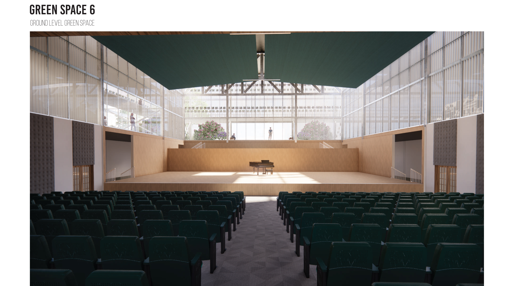

About Me
This page is all about me

My name is Caitlin Ryan. I am 22 years old. I am currently a fourth year architecture student enrolled in the five year Bachelor of Architecture program in the Hillier College of Architecture and Design at NJIT.
NJIT Bachelor of Architecture
Background
I am from Kenilworth, NJ. I have lived here all my life. I went to high school at Magnet High School located on the UCVTS Campus in Scotch Plains, NJ. My high school was geared towards engineering where I was able to take classes such as:
- Biomedical engineering
- Electrical engineering
- Civil engineering
Family Life
I come from a family of six. I am the youngest of four. I have two older sisters, Melissa and Shannon, and an older brother, Chris, who is the oldest. We are all two years apart. My mother has been a stay at home mom since my brother was born. My dad is a deputy chief firefighter in Hillside and a paramedic. As for my siblings:
-
Melissa:
Pediatric Nurse. She is 24 years old. She studied at Seton Hall University. She is going back to school to study Speech Pathology at Montclair University.
-
Shannon:
ER Nurse. She is 26 years old. She studied at Seton Hall University. She works at Union ER Hospital.
-
Chris
Hillside Firefighter and EMT. He is 28 years old. He studied at NJIT for IT. He originally worked at a courthouse in the IT department, but shortly became a firefighter afterwards. He is married to his high school sweetheart and recently had a baby boy, my newphew Dean., who is three months old.
Major and Job
I am currently a fourth year architecture student enrolled in the five year architecture program in the Hillier College of Architecture and Design at NJIT.
I plan on graduating and pursuing my architectural licensing. I am interested in the fields of landscape, sustainbility, and green architecture.
Here is some of my school work:

I currently work at the firm Di Cara | Rubino Architects located in Wayne, NJ as an intern. I have been there since the beginning of the summer in 2022. They work primarily on K-12 Education facilities.
Pets
I have three dogs and two rabbits. My dogs are named Autumn, Winter, and Meeko. My rabbits are named Peanut and Butter.
Interests
Some things I like include:
- Animals
- Hiking
- Biking
- Jogging
- Traveling
- Architecture
- Art